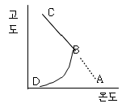
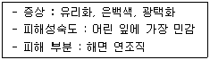
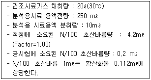
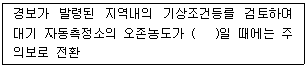
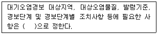

대기환경산업기사 (2002-05-26 기출문제)
1과목: 대기오염개론
1. 오존층의 두께를 표시하는 단위로 알맞은 것은?
- Phon
- ozonosphere
- Dobson
- TSI
(정답률: 알수없음)

2. 프로판가스 200㎏을 액화시켜 만든 LPG가 기화 될 때의 용적은 약 몇 Sm3인가?
- 102
- 158
- 204
- 275
(정답률: 알수없음)
3. 다음 그림은 기온구배를 나타낸 것인데 AB에서 BD선으로 역전현상이 현저하게 일어나는 것은?

- 정오에서 오후까지
- 오후에서 밤까지
- 저녁에서 밤까지
- 밤에서 새벽에서
(정답률: 알수없음)
4. 다음의 대기오염물질중 1V/Vppm에 상당하는 W/Wppm 값이 가장 큰 것은?
- 이산화항
- 이산화질소
- 염화수소
- 시안화수소
(정답률: 알수없음)
5. 다음 중 국제적으로 약속된 표준 체감율은?
- -1.0℃/100m
- -0.83℃/100m
- -0.86℃/100m
- -0.53℃/100m
(정답률: 알수없음)
6. 오존에 대한 설명으로 맞는 것은?
- 오전 7~8시경에 최고 농도를 보인다.
- 야간에 NO2와 반응하여 생성한다.
- 자외선 강도 0.01mW/cm2이상일 때 발생하기 쉽다고 알려져 있다.
- 대기중 오존의배경농도는 0.01~0.02ppm정도이다.
(정답률: 알수없음)
7. 대기오염물 중에서 다음과 같은 식물의 피해 증상,피해성숙도, 피해 부분이 나타나는 오염물로 가장 알맞은 것은?

- 아황산가스
- 오존
- 질소산화물
- PAN
(정답률: 알수없음)
8. 바람이 다소 강하거나 구름이 많이 낀 경우 대기상태는 중립을 유지하게 되는데 이 때 굴뚝에서 배출되는 연기의 형태로 알맞은 것은?
- 환상형
- 부채형
- 원추형
- 지붕형
(정답률: 알수없음)
9. 다음 중 지구 온난화를 일으키는 물질과 가장 거리가 먼 것은?
- CO2
- CO
- CH4
- N2O
(정답률: 알수없음)
10. 염소를 배출하는 공장이 있다. 이 공장에서 배출하는 염소(Cl2)가 0℃, 1기압에서 0.8ppm 일 때, ㎍/m3농도는?
- 약 2254
- 약 2362
- 약 2437
- 약 2535
(정답률: 알수없음)
11. 다음의 설명 중 틀린 것은?
- 산악지방에서 밤에 정상부근에서 불어내려오는 바람을 산풍이라 한다.
- 열섬효과는 직경 10㎞ 이상의 도시에서 특히 잘 발생한다.
- 열섬이 생길 경우 강한 바람이 불지 않으면 오염물질은 도시 상공에 머물게 되어 축적된다.
- 육풍은 해안에서 멀리 떨어진 내륙에서 일어나며, 여름철 보다는 겨울철이 더 강하다.
(정답률: 알수없음)
12. 자동차에서 배출되는 대기오염물질 중 크랑크 케이스에서 가장 많이 배출되는 가스는?
- 탄화수소
- 질소산화물
- 일산화탄소
- 부유물질
(정답률: 알수없음)
13. 경도풍은 다음의 3가지 힘이 평형을 이루면서 부는 바람을 말한다. 이와 관련이 가장 적은 힘은?
- 마찰력
- 기압경도력
- 원심력
- 전향력
(정답률: 알수없음)
14. 다음의 기온역전 중 “공중역전” 과 가장 거리가 먼 것은?
- 침강역전
- 난류역전
- 해풍역전
- 이류성역전
(정답률: 알수없음)
15. 다음 중 불화수소(HF)의 주 배출원을 가장 알맞게 짝지은 것은?
- 황산공업, 제지공업
- 금속정련공업, 약품공업
- 도금공업,염료공업
- 화학비료공업, 알루미늄공업
(정답률: 70%)
16. 세계적으로 유명한 대기오염 사건과 관련하여 뮤즈계곡, 도노라에서 공통적인 발생조건으로 맞는 것은?
- 무풍, 기온역전
- 공화학반응, 수직혼합
- 강한바람, 황산화물
- 공화학반응, 2차오염물질
(정답률: 알수없음)
17. 다음 그림은 우리 인체의 호흡계통의 모식도이다. 분진이 폐포에 가장 잘 도달할 수 있는 입자의 크기는? (문제 오류로 문제 및 보기 내용이 정확하지 않습니다. 정확한 내용을 아시는 분께서는 오류신고를 통하여 내용 작성 부탁드립니다. 정답은 3번입니다.)
- 50㎛ 이상
- 10~50㎛
- 0.5~5.0㎛
- 0.5㎛ 이하
(정답률: 알수없음)
18. 역사적으로 대기오염사건중 런던형 스모그(Smog)사건의 설명과 가장 거리가 먼 것은?
- 발생기온 : 0~5℃
- 화학반응 : 환원
- 풍속 : 3~5 m/s범위이내
- 역전종류 : 방사성역전(복사형)
(정답률: 알수없음)
19. 지상 10m에서의 풍속이 10m/s 이라면 지상 60m에서의 풍속은 얼마(m/s)인가? (단, P = 1/9 이고 Deacon식을 이용)
- 약 10.8 m/s
- 약 11.6 m/s
- 약 12.2 m/s
- 약 134.4m/s
(정답률: 알수없음)
20. 오존층 파괴와 관련된 설명중 틀린 것은?
- 오존층이란 성층권에서도 오존이 더욱 밀집해 분포하는 지상 20~30㎞ 구간을 말한다.
- 대기 중에서 오존층의 파괴현상이 가장 심한 곳은 남극을 중심으로 한 남극 대륙으로 오존층에 구멍이 생긴 것으로 보고 되었다.
- 오존층 파괴의 주요원인 물질은 염화불화찬소(CFC)인 것으로 추정되어지고 있고, CFC는 주로 냉매로 많이 이용되어졌다.
- CFC는 독성과 활성이 강한 물질로서 대기중으로 배출될 경우 비교적 쉽게 성층권에 도달하며, 비엔나협약을 통하여 생산과 소비량을 줄이기로 결의 하였다.
(정답률: 알수없음)
2과목: 대기오염 공정시험 기준(방법)
21. 분석대상가스가 불소화합물인 경우, 시료채취를 위한 여과재 재질로 가장 알맞은 것은?
- 알칼리 성분이 없는 유리솜
- 실리카솜
- 카아보란덤
- 소결유리
(정답률: 알수없음)
22. 배출허용기준 시험법에서 분석대상 가스별 흡광도를 측정 할수 있는 파장으로 적절한 것은?
- 암모니아 - 560㎚
- 황산화물 - 460㎚
- 염화수소 - 460㎚
- 질소산화물 - 560㎚
(정답률: 알수없음)
23. 대기오염공정시험방법에서 정의하고 있는 용어의 설명으로 틀린 것은?
- 단순한 용액이라 기재하고 그 용액 이름을 밝히지 않은 것은 수용액을 말한다.
- 시험성적수치는 마지막 유호숫자의 다음 단위까지 계산하여 KSA0021(수치의 맺음법)에 따라 기록한다.
- 방울수라 함은 20℃에서 정제수 20방울을 떨어뜨릴 때 그 부피가 1mL되는 것을 뜻한다.
- 시약의 표준품을 채취할 때 표준액이 정수(整數)로 기재된 경우는 “약”자를 붙여 사용할 수 없다.
(정답률: 알수없음)
24. 링겔만 매연 농도표를 사용하여 측정하는 매연농도의 종류로 맞는 것은?
- 0도에서 5도까지 6종
- 0도에서 4도까지 5종
- 1도에서 5도까지 6종
- 1도에서 5도까지 5종
(정답률: 알수없음)
25. “이온크로마토그래프법”의 장치 구성순서로 가장 알맞은 것은?
- 용리액조-펌프-써프렛서-시료주입장치-분리관-검출기
- 펌프-시료주입장치-용리액조-써프렛서-분리관-검출기
- 용리액조-펌프-시료주입장치-분리관-써프렛서-검출기
- 펌프-시료주입장치-써프렛서-분리관-용리액조-검출기
(정답률: 알수없음)
26. 흡광광도법을 이용하여 납화합물을 분석할 때 납 디티존착염을 추출할 수 있는 용제로 가장 거리가 먼 것은?
- 디티존클로로포름용액
- 디티존사염화탄소용액
- 디티존벤젠용액
- 디티존에틸렌용액
(정답률: 알수없음)
27. 굴뚝 배출가스중의 먼지 측정을 위한 측정점에 대한 설명으로 틀린 것은?
- 굴뚝단면적이 원형일 경우 그 직경이 4.5m를 초과할 때는 측정점수는 20점까지로 한다.
- 굴뚝단면적이 원형일 경우 그 직경이 1.2m일때의 측정점수는 6점으로 한다.
- 굴뚝단면적이 사각형일 경우 굴뚝의 단면적이 20m2를 초과할 경우 측정점수는 20점까지로 한다.
- 굴뚝단면적이 원형일 경우 굴뚝의 단면적이 0.25m2이하인 경우에는 측정점을 글뚝단면 중심 1점만 측정한다.
(정답률: 알수없음)
28. 굴뚝배출가스의 아황산가스를 연속적으로 자동측정하는 방법과 거리가 먼 것은?
- 용액전도율법
- 적외선흡수법
- 불꽃광도법
- 광투과법
(정답률: 알수없음)
29. 가로 1.5m, 세로 1m 의 상하동일 단면적인 직사각형 굴뚝의 환산직경은?
- 1.8m
- 1.6m
- 1.4m
- 1.2m
(정답률: 알수없음)
30. 배출가스 중에 암모니아가 다량 존재할 때 채취관으로 가장 적당한 것은?
- 염화비닐 수지
- 실리콘수지
- 보통강철
- 네오프렌
(정답률: 알수없음)
31. 백만 분율(Parts Per million)을 표시할 때 ppm의 기호를 사용하는 바 따로 표시가 없어도 기체일 때에 사용되는 농도표시는?
- W/W
- W/V
- V/V
- V/W
(정답률: 알수없음)
32. 굴뚝내의 배기가스 유속을 피토우관으로 측정한 결과 그 동압이 30mmH2O 이었다면 굴뚝내의 유속은? (단, 배기가스온도 250℃, 공기의 비중량은 1.3kg/Sm3, 피토우관 계수는 1.0 이다)
- 29.4 m/s
- 32.0 m/s
- 34.7 m/s
- 36.2 m/s
(정답률: 알수없음)
33. “가스크로마토그래프법”에 관한 설명으로 틀린 것은?
- 일정유량으로 유지되는 운반가스는 시료 도입부로부터 분리관내를 흘러서 검출기를 통하여 외부로 방출된다.
- 시료의 각 성분이 분리되는 것은 분리관을 통과하는 성분의 침전, 흡습에 의한 속도변화 차이 때문이다.
- 일반적으로 무기물 또는 유기물의 대기오염물질에 대한 정성, 정량분석에 이용된다.
- 기체시료 또는 기화한 액체나 고체시료를 운반가스에 의하여 분리, 관내에 전개시켜 기체 상태에서 분리되는 각 성분을 크로마토그래피 적으로 분석하는 방법이다.
(정답률: 알수없음)
34. 굴뚝측정공에서 원통여지를 사용하여 먼지를 포집하였다. 측정결과는 다음과 같을 때 먼지농도를 얼마인가? (단, 흠인가스량(표준상태) : 50ℓ, 먼지포집전의 원통여지무게 : 5.3720 g, 먼지포집후의 원통여지무게 : 5.3850 g)
- 310 ㎎/Sm3
- 290 ㎎/Sm3
- 260 ㎎/Sm3
- 230 ㎎/Sm3
(정답률: 알수없음)
35. 어느 굴뚝 배출가스중의 황산화물을 아르세나조 Ⅲ법으로 측정하여 다음과 같은 결과를 얻었다.이 때 황산화물의 농도는? (표준상태 기준)

- 621.4 ppm
- 615.5 ppm
- 584.4 ppm
- 572.5 ppm
(정답률: 알수없음)
36. 먼지측정시 시료채취의 등속흡인정도를 보기 위한 등속흡인계수를 구할 때 다시 시료채취를 하지 않고 인정될수 있는 등속흡인계수값의 범위기준은?
- 90% ~ 1⑤%
- 90% ~ 110%
- 95% ~ 1⑤%
- 95% ~110%
(정답률: 알수없음)
37. 굴뚝등에서 배출되는 배출가스중 암모니아 측정법 중 중화 적정법으로 분석하기 위한 적합한 경우는?
- 시료가스 채취량을 40ℓ 로 하였을 때 암모니아 농도가 100ppm 이상인 경우
- 시료가스 채취량을 40ℓ 로 하였을 때 암모니아 농도가 100ppm 미만인 경우
- 시료가스 채취량을 20ℓ 로 하였을 때 암모니아 농도가 10ppm 이상인 경우
- 시료가스 채취량을 40ℓ 로 하였을 때 암모니아 농도가 10ppm 미만인 경우
(정답률: 알수없음)
38. 파라로자닐린시약을 가하여 발색시켜 흡광광도법으로 분석하는 환경대기 중의 오염물질은?
- 일산화탄소
- 부유분진
- 아황산가스
- 탄화수소
(정답률: 알수없음)
39. 대상지역의 오염도 분포에 따른 환경기준 시험을 위한 채취지점수의 결정을 위한 공식이 N =Nx + Ny + Nz, Nx=[{(0.095)×( ( Cn - Cs)/Cs) × x }이라면 이식에서 x는 무엇을 나타내는가?
- 환경기준보다 농도가 높은 지역(km2)
- 환경기준보다 농도가 낮으나 자연농도보다 높은 지역(km2)
- 자연상태의 농도와 같은 지역(km2)
- 그 지역 최대 농도지역(km2)
(정답률: 알수없음)
40. 배출가스중 NOx을 페놀디 슬폰산법에 의해 측정하고자 할 때 시료가스의 흡수액은?
- 질산암모늄 + 황산
- 수산화나트륨용액
- 암모니아수
- 황산 + 과산화수소 + 증류수
(정답률: 알수없음)
3과목: 대기오염방지기술
41. 질소산화물의 발생 억제법에 관한 설명으로 알맞지 않은 것은?
- 저온도연소 : 주입하는 공기의 예열온도를 조절하여 질소산홤루 발생을 줄인다.
- 저산소연소 : 공기비를 최대한 억제하여 질소 산화물과 일산화탄소, 그을음을 최소화한다.
- 배기가스재순환 : 불꽃의 최고온도가 낮아져 질소 산화물의 생성량이 줄어든다.
- 수증기분무 : 화로내에 물이나 수증기를 분무하여 산소와 수소를 분해 시키면 흡열반응을 일으키는 동시에 둥근 화염을 형성시켜 NOx 발생을 방지한다.
(정답률: 알수없음)
42. 유입계수와 속도압이 각각 0.82, 10mmH2O 일 때 후드의 압력 손실은?
- 약 12mmH2O
- 약 8mmH2O
- 약 5mmH2O
- 약 2mmH2O
(정답률: 알수없음)
43. 자동차 주행시 탄화수소를 가장 많이 발생하는 경우는?
- 정지가동
- 가속
- 등속
- 감속
(정답률: 알수없음)
44. 메탄올(CH3OH) 3㎏이 연소하는데 필요한 이론공기량은?
- 1.2N/m3
- 5.0N/m3
- 15N/m3
- 45N/m3
(정답률: 알수없음)
45. 액체연료의 연소특성 중 장점(조작상)이라 할수 없는 것은?
- 발열량이 크고 품질이 비교적 균일하다.
- 회분이 거의 없고 점화, 소화 및 연소의 조절이 비교적 쉽다.
- 계량, 기록이 수월하다.
- 연료의 예열이 손쉽고 저질 연료로 고온을 얻을 수 있다.
(정답률: 알수없음)
46. 송풍기의 크기와 유체밀도가 일정할 때 송풍기 회전속도를 2배로 증가시켰을 때 다음 옳은 것은?
- 정압은 8배가 된다.
- 동력은 4배가 된다.
- 배출속도는 4배가 된다.
- 유량은 2배가 된다.
(정답률: 알수없음)
47. 관성력 집빈장치의 집진효율에 관한 내용으로 맞지 않은 것은?
- 충돌진의 처리배가 속도는 입자의 성상에 따라 적당히 빠르게 하고 처리후의 출구 가스속도는 늦을수록 미립자의 제거가 쉽다.
- 기류의 방향전환 각도가 작을수록, 전환횟수가 많을수록 압력손실이 커지지만 집진율은 높아진다.
- 처리가스량의 5~10%를 흡인시켜 집진장치내 난류현상을 억제하여 집진율을 높일 수 있다.
- 호퍼(DUST BOX)는 적당한 모양과 크기가 필요하다.
(정답률: 알수없음)
48. 어떤 집진기의 입구농도 Ci = 6g/m3, 입구 유입가스량 10m3이며, 출구 농도 Co = 0.5g/m3, 출구 가스량이 12m3 일 때 이 집진기의 효율은?
- 93.7%
- 92.4%
- 91.7%
- 90.0%
(정답률: 알수없음)
49. 탄소 89%, 수소 11%로 된 경유를 공기과잉계수 1.2로 연소시 탄소 1%(무게 분율)과 그을음으로 돤다면 건조배기가스 1 Sm3 중 그을음의 농도(g/m3)는?
- 0.37
- 0.44
- 0.59
- 0.72
(정답률: 알수없음)
50. 착화온도가 가장 높은 연료는?
- 장작
- 탄소
- 수소
- 무연탄
(정답률: 알수없음)
51. 탄화수소(HC)에 관한 설명으로 틀린 것은?
- 석유계 연료의 탄수소비는 연소용 공기량과 발열량 그리고 연료의 연소특성에도 영향을 미친다.
- 탄수소비가 크면 비교적 높은 연료는 매연이 발생되기 쉽다.
- 탄수소비가 클수록 이론공연비도 증가하며 휘도가 높고 방사율이 커진다.
- 기체연료의 탄수소비는 올레핀계 ＞ 나트텐계 ＞ 아세틸계 ＞ 프로필계 ＞ 프로판 ＞ 메탄 순으로 감소한다.
(정답률: 알수없음)
52. 수소 12%, 수분 0.3%인 중유의 고발열량이 10,600㎉/㎏ 일 때 이 중유의 저발열량은?
- 9,⑤0 ㎉/㎏
- 9,350 ㎉/㎏
- 9,650 ㎉/㎏
- 9,950 ㎉/㎏
(정답률: 알수없음)
53. 직경 300mm, 유효높이 15m 의 원통형 백필터를 사용하여 함진농도 5g/m3 가스를 1200m3/min로 처리한다면 백필터의 소요수는? (단, 여과속도 1.2㎝/sec)
- 107개
- 118개
- 133개
- 151개
(정답률: 알수없음)
54. 탄소, 수소의 중량조성이 90%, 10%인 액체연료를 매시 15㎏ 연소되고, 공기비는 1.2 라면 매시 필요한 공기량(Sm3/hr)은?
- 약 153
- 약 178
- 약 192
- 약 209
(정답률: 알수없음)
55. 정유과정에서 탈황하는 것이 여러모로 효과적이다. 중유 탈황법 중 가장 많이 활용하는 방법은?
- 접촉수소화 탈황
- 금속 산화물에 의한 흡착탈황
- 미생물에 의한 생화학적 탈황
- 방사선 화학적 탈황
(정답률: 알수없음)
56. 시안화수소(HCN)의 처리법으로 가장 일반적인 것은?
- 흡착법, 세정법
- 세정법, 연소법
- 산화법, 흡착법
- 흡수법, 중화법
(정답률: 알수없음)
57. 굴뚝 배기가스중의 수분을 측정한 결과 배기가스 1 Sm3당 50g 이었다. 건조가스에 대한 수분의 용적비는?
- 6.1%
- 6.6%
- 7.1%
- 7.6%
(정답률: 알수없음)
58. 이론적으로 탄소 1 ㎏을 연소시키면 30,000㎉의 열이 나고 수소 1 ㎏을 연소시키면 34,100㎉의 열이 난다면 에탄(C2H6) 2㎏ 연소로 발생하는 열량은?
- 40,820㎉
- 55,600㎉
- 61,640㎉
- 74,100㎉
(정답률: 알수없음)
59. 사이크론 스크러버에 관한 설명으로 알맞지 않은 것은?
- pease anthony 형의 액가스비 L=0.5~1.0L/m3이며 기타 대부분은 1~4L/m3 전후이다.
- 압력손실은 100~200mmH2O로 S형 lmpller를 붙인 것은 압력손실이 높고 집진효율도 높다.
- 비교적 구조가 복잡하고 소용량의 가스처리에 적합하다.
- 원심력집진, 가압수식 그리고 유수식 집진을 동시에 거치기 때문에 효율이 높다.
(정답률: 알수없음)
60. 평행하게 설치된 높이 6.6m, 폭 4.8m 인 두판사이의 중간에 방전극이 위치하고 있다.집진가 처리공기가 1m3/sec 로 통과할 때 집진효율이 95%가 되려면 충전입자의 이동속도(m/sec)는?
- 0.013
- 0.026
- 0.047
- 0.094
(정답률: 알수없음)
4과목: 대기환경 관계 법규
61. 사업자가 비치하여야 할 자가측정에 관한 기록과 측정시 사용한 여과지 및 시료채취기록지의 보존기간은?
- 최종기재 및 측정한 날로부터 2년으로 한다.
- 최종기재 및 측정한 날로부터 1년으로 한다.
- 최종기재 및 측정한 날로부터 6월로 한다.
- 최종기재 및 측정한 날로부터 3월로 한다.
(정답률: 알수없음)
62. ( ) 안에 알맞은 것은?

- 0.⑤ppm이상 - 0.08ppm미만
- 0.08ppm이상 - 0.12ppm
- 0.12ppm이상 - 0.3ppm미만
- 0.3ppm이상 - 0.5ppm미만
(정답률: 알수없음)
63. 현장에서 배출허용기준 초과여부를 판정 할 수 있는 오염 물질이 아닌 것은?
- 일산화탄소
- 암모니아
- 질소산화물
- 매연
(정답률: 알수없음)
64. 사용연료가 휘발유인 이륜자동차(50cc이상)의 배출가스 보증기간으로 알맞은 것은? (단, 2001년 1월 1일부터 2002년 6월 30일 까지의 제작 자동차)
- 2년 또는 2,000㎞
- 2년 또는 10.000㎞
- 1년 또는 6,000㎞
- 1년 또는 4,000㎞
(정답률: 알수없음)
65. 초과부과금의 징수유예기간과 그 기간중 분활납부 회수로 알맞은 것은?
- 유예한 날의 다음날로부터 다음 부과기간의 개시일전일까지 - 4회이내
- 유예한 날의 다음날로부터 다음 부과기간의 개시일전일까지 - 6회이내
- 유예한 날의 다음날로부터 1년이내 - 4회이내
- 유예한 날의 다음날로부터 1년이내 - 6회이내
(정답률: 알수없음)
66. 자동차에 사용하는 연료 또는 첨가제를 환경부형이 정하는 기준에 부적합하도록 제조한 자에 대한 벌칙으로 적절한 것은?
- 200만원이하의 벌금에 처한다.
- 1년이하의 징역 또는 500만원이하의 벌금에 처한다.
- 3년이하의 징역 또는 1500만원이하의 벌금에 처한다.
- 5년이하의 징역 또는 3000만원이하의 벌금에 처한다.
(정답률: 알수없음)
67. 비산먼지 배출허용 기준으로 맞는 것은? (단, 모든 배출시설)
- 0.5 ㎎/Sm3
- 1.0 ㎎/Sm3
- 1.5 ㎎/Sm3
- 2.0 ㎎/Sm3
(정답률: 알수없음)
68. 다음 중 대기환경보전법에서 규정하는 기후,생태계변화 유발 물질이 아닌 것은?
- 수소불화탄소
- 메탄
- 이산화질소
- 염화불화탄소
(정답률: 알수없음)
69. 비산먼지의 발생을 억제하기 위한 시설 및 필요한 조치에 관한 기준 중 야적(분채상 물질을 야적하는 경우)에 대한 내용으로 알맞은 것은?
- 야적물질의 함수율은 항상 4~7%를 유지할 수 있도록 살수시설을 설치할 것
- 야적물질의 함수율은 항상 7~10%를 유지할 수 있도록 상수시설을 설치할 것
- 야적물질의 함수율은 항상 10~13%를 유지할 수 있도록 상수시설을 설치할 것
- 야적물질의 함수율은 항상 13~17%를 유지할 수 있도록 상수시설을 설치할 것
(정답률: 알수없음)
70. 배출구별 고체환산 연료사용량이 연간 920ton인 사업장의 자가측정 횟수는?
- 월 2회 이상
- 매 2월 1회이상
- 매분기 1회 이상
- 매반기 1회 이상
(정답률: 알수없음)
71. 공동방지시설의 설치내용을 변경하고자 할 때 사업자 또는 공동방지시설운영기구의 대표자가 서류로 증명하여야하는 설치변경내용으로 거리가 먼 것은?
- 공동방지시설의 운영에 관한 규약
- 공동방지시설에 연결된 사업장의 규모
- 공동방지시설의 위치
- 공동방지시설의 종류 또는 규모
(정답률: 알수없음)
72. 비산먼지 발생사업으로 볼 수 없는 것은?
- 운송장비제조업
- 금속제품 제조, 가공업
- 토사운송업
- 섬유제품가공업
(정답률: 알수없음)
73. 생활약취시설로 볼 수 없는 것은?
- 공중위생관리법에 의한 세탁업의 시설
- 비료관리업에 의한 부산물비료 생산시설
- 수질환경보전법에 의한 하수종말처리시설
- 페기물관리법에 의한 폐기물시설
(정답률: 알수없음)
74. “초과 부과금” 대상 오염물질이 아닌 것은?
- 탄화수소
- 악취
- 염소
- 불소화합물
(정답률: 알수없음)
75. 환경부장관이 사업자가 배출시설에 부착하여 운영하는 측정기기의 운녕, 관리기준 준수를 위하여 조치명령을 하는 때의 최대개선기간으로 적절한 것은? (단,연장기간 제외)
- 6개월
- 9개월
- 1년
- 1년 6개월
(정답률: 알수없음)
76. 다음은 배출부과금 처리부과금의 위반횟수별 부과계수를 나타낸 것이다. 옳은 것은?
- 처음위반 110/100, 다음위반 (1⑤/100)×(110/100)
- 처음위반 110/1⑤, 다음위반 (110/100)×(110/100)
- 처음위반 1⑤/100, 다음위반 (1⑤/100)×(110/100)
- 처음위반 1⑤/100, 다음위반 (110/100)×(1⑤/100)
(정답률: 알수없음)
77. 초과부과금 산정기준중 오염물질 1킬로그램당 부과금액이 가장 높은 대기오염물질은?
- 불소화합물
- 황화수소
- 이황탄소
- 염화수소
(정답률: 알수없음)
78. ( )안에 알맞은 내용은?

- 시.도지사령
- 환경부령
- 홍리령
- 대통령령
(정답률: 알수없음)
79. 가스상물질 중 이황화탄소의 배출허용기준으로 적절한 것은? (단, 모든 배출시설)
- 10ppm이하
- 20ppm이하
- 30ppm이하
- 40ppm이하
(정답률: 알수없음)
80. 다음 중 대기오염 방지시설이 아닌 것은?
- 촉매반응을 이용하는 시설
- 응집에 의한 시설
- 토양미생물을 이용한 처리시설
- 응축에 의한 시설
(정답률: 알수없음)
설명: Dobson은 오존층의 두께를 측정하는 단위입니다. 이 단위는 오존층의 농도를 나타내는 Dobson Unit (DU)로 표시됩니다. 이 단위는 오존층의 두께를 나타내는 것이 아니라, 오존층의 농도를 나타내는 것입니다. 따라서 오존층의 두께를 측정하는 단위로 Dobson을 사용합니다. Phon은 소리의 강도를 측정하는 단위, ozonosphere는 지구 상공의 오존층을 의미하는 용어, TSI는 태양 복사 에너지를 나타내는 단위입니다.